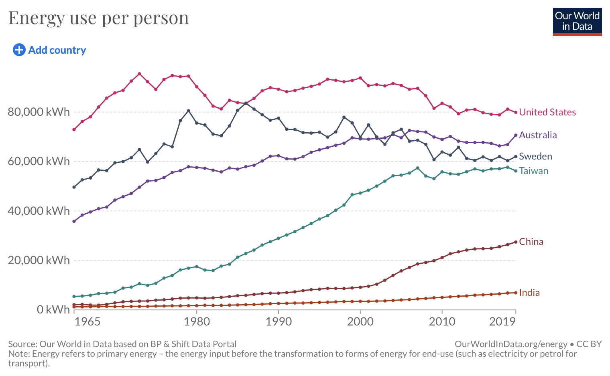

Climate Change Nuclear Investment
Climate action is long overdue. Nuclear power investment is inevitable. The source of most energy on Earth was from our Sun at some point in time. Our Sun is one big nuclear fusion reactor.
I’ve talked and argued with many smart people about nuclear power. Some were scientists, others with acedemic credentials of some kind that had an opinion on the topic. I remember clearly struggling to argue with them. To a point where I really couldn’t understand why they were so anti-nuclear. To this day, I hold onto that frustration in being unable to convince them that we should be doing more, hence the motivation for this post.
We are burning the carbon stored in our Earth millions of years ago
It should be known that the fossil fuels buried deep in our Earth were once carbon lifeforms which underwent millions of years of compression and decay to reduce to the coal and fuel deposits we have all around the world.
We are burning the carbon remains of trees and dinosaurs of generations past
This post is not meant to convince you of climate change. It’s real and apparent - instead I want to focus on why we need nuclear to be in the conversation for energy generation.
Lets look at our long term future
If we imagine the future of our species as inter-planetary or even, interstellar - One can imagine how dark the galaxy is as we move away from our sun. In these distant places, we won’t have strong sunlight, wind nor geothermal sources to power electronics or whatever we need for the spacecraft.
In these distant colonies, we will need something self sufficient and self contained. We’ll need portable nuclear sources which generate heat (space is cold and most tech developed on Earth including our bodies like to operate in a ‘sane’ range) and electricity to power tools, tech and equipment.
We should be building these things now in parallel with existing renewable technologies, but governments are not incentivising or allowing nuclear techonology to proliferate.
While it’s possible for an eccentric billionaire to fund an electric car company, you need a lot more than that to begin a nuclear energy revolution globally. It needs to start with governments allowing and incentivising this for civilian usage, rather than building nuclear ‘submarines’ and continuing the negative stain of nuclear usage in military or ‘defence’ purposes.
Overly pro-renewable is negative
Anti-nuclear folk also take the form of renewable energy folk that push their agenda too hard and ignore nuclear power as a contributer to a carbon neutral future.
Richer countries have the luxury of already having investment into electricity distribution networks. Developing nations however will continue to leverage the ubiquitously available carbon based fuel sources to drive their economies.

Sunshine is not fixed and solar is an inconsistent and unpredictable energy source (though a very good one!). I want to emphasise that nuclear gives us a consistent base load of power to expect. You can drop in a modern thorium reactor to a new town you want to build and it’ll be the thing that powers the development that happens.
Nuclear is expensive?
Yes, it is. The more we do it the better we’ll get at it and the cheaper it will become. Not to mention all the red-tape which has been added to make it hard to do it cheaply.
What would Ted do?
What would I do if it were up to me? I would make available for sale large capacity nuclear power generation units (portable thorium reactors). Imagine private enterprises which manufacture and produce these reactors that can simply be installed or deployed to any site around the world. They are entirely self contained and once the fuel runs out there would be a pickup of the unit to be properly decommissioned and broken down for parts to be rebuilt.
Final thoughts
Sadly Australia is the kind of country to sit back and wait for actions by others rather than to be the catalyst of change.
Reflecting back on our inaction, then heavy action in regards to COVID-19 vaccinations, most of us are unwilling to do anything and instead, wait and see what the best course of action might be.
Solar, wind and geothermal are good sources of energy no doubt. Our near term future will include solar installations on most rooftops which feed energy into the network. Households will have local battery storage mechanisms which can supply energy to a household at night and be recharged during the day.
Heavy industry, hospitals, buildings in our central business district and manufacturing centers should rely on nuclear power.
I believe China will lead the way with Thorium Nuclear Reactors.
There will be a market for them if they are portable. Making these and manufacturing them at scale will be awesome for countries that need to power their cities for cheap.
Imagine a portable reactor that is a drop-in replacement to a dirty coal fire plant. Even better, setting up a new city/town capable of supporting 100,000 people by first installing a thorium reactor.
Imagine setting up a new manufacturing or tech hub with affordable housing in places that need utilities like power, water and telecommunications.